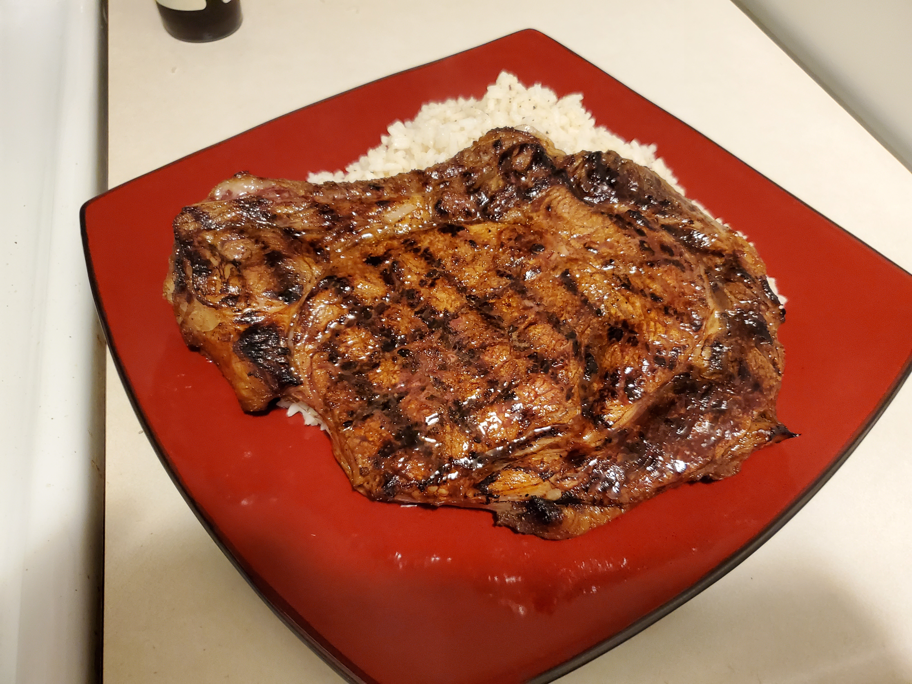

I love steak...
This is a good steak marinade that I use a lot. You can use it for any cut of steak. It requires the spice mix from my Barbecued Ribs recipe. However it can be substituted for any other spice mix you like to use, however.
Heres what you will need:
- Steak; either sirloin, strip, rybeye, or filet if you wanna treat yourself. For the picture I used a bone-in grass fed rybeye.
- 1/4 cup olive oil
- 1/4 cup balsamic vinegar
- 1/4 cup soy sauce
- 1/4 cup worcestershire sauce
- 1/2 can of cola or root-beer
- 3 TBSP of my spice rub. If you opt out of that you can use equal parts salt, pepper, and granulated garlic
How to make:
- Preheat oven to 400 deg fahrenheit
- Combine all ingredients in a tupperware or plastic bag and mix well. Then add the steak
- Let sit for at least an hour. Preferably overnight works best
- Set a grilling pan or cast iron skillet set on medium high temperature
- Grill the steak in 2-3 minute intervals. Turn the steak, then flip, then turn one more time (to get the grill marks)
- Put the marked steak on a baking sheet and finish in the oven. It depends on how you like the steak cooked. Use a thermometer to gauge doneness. Medium is usualy about 8 minutes though
- ENJOY!!!